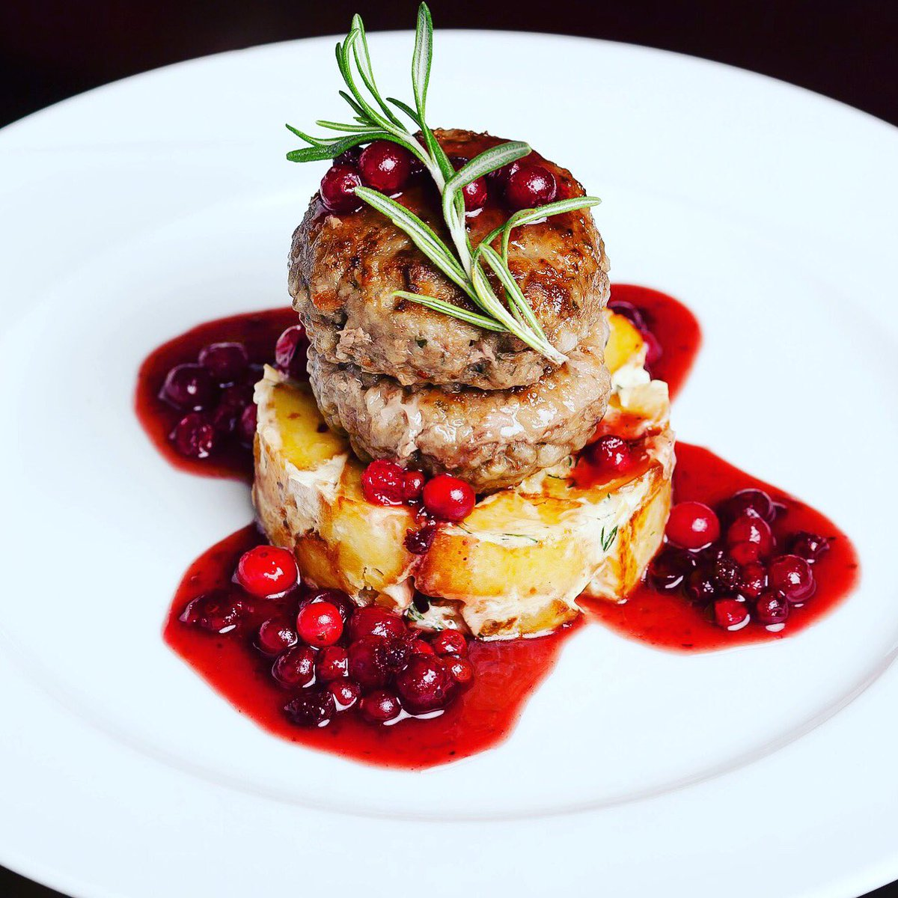
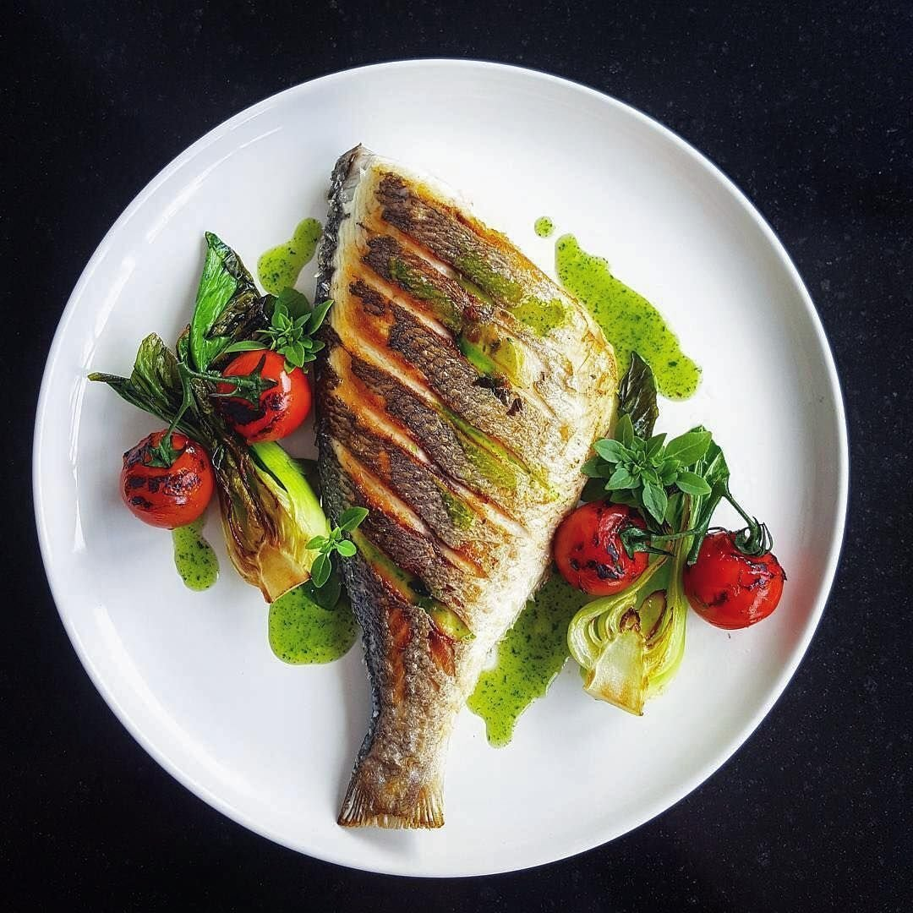

Окунитесь в атмосферу русских кулинарных традиций вместе с рестораном “RESTROOM”!
За время своего существования ресторан заслужил статус излюбленного места как для деловых встреч, так и отдыха нижегородцев. В разное время его посетили практически все видные российские политики, а также деятели культуры и искусства, прибывшие с визитом в наш город.
В настоящее время ресторан “RESTROOM” входит в тройку лучших ресторанов Нижнего Новгорода по итогам оценки посетителей и экспертов.


